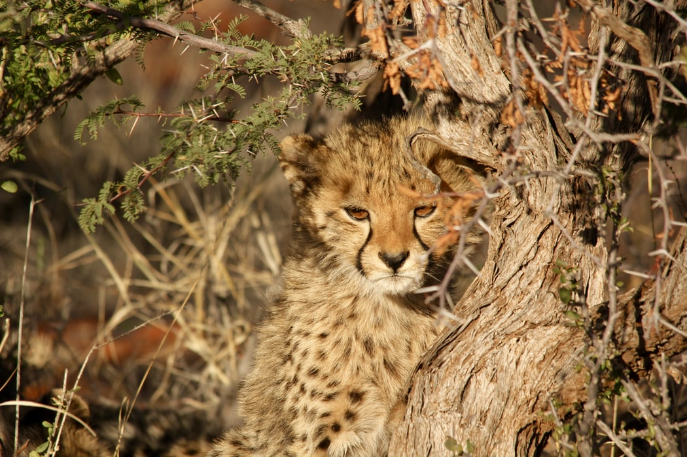
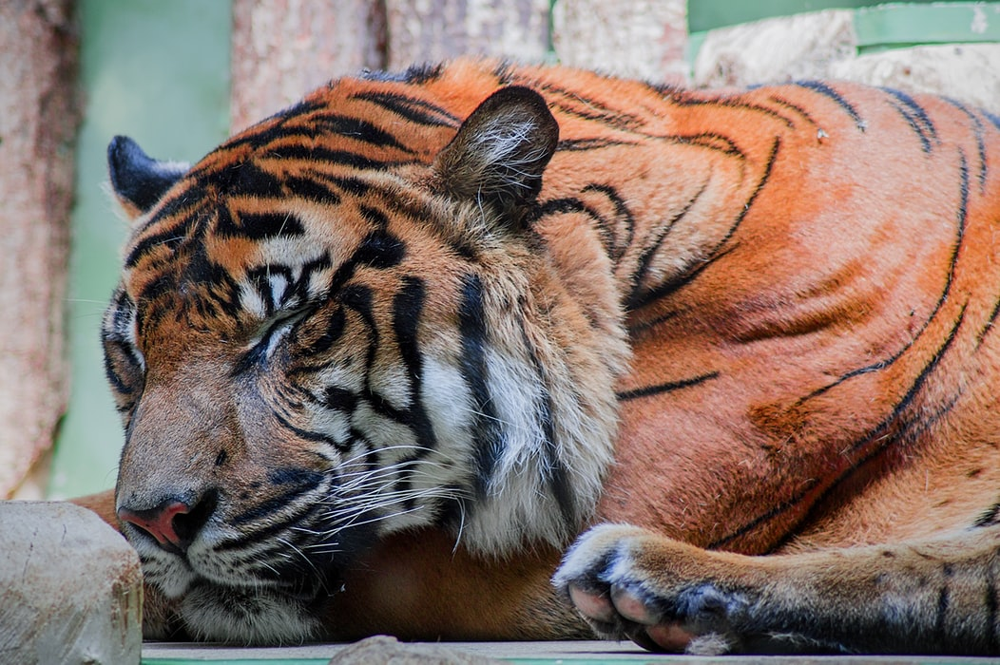
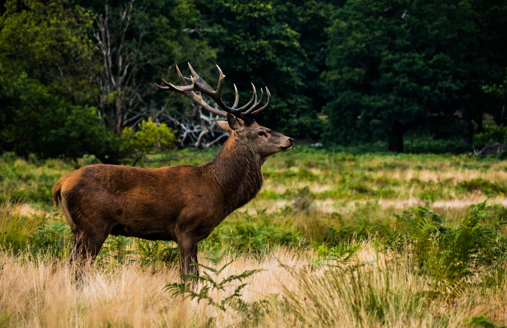
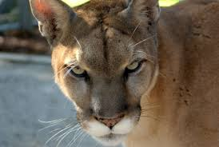

Wildlife traditionally refers to undomesticated animal species, but has come to include all organisms that grow or live wild in an area without being introduced by humans.Wildlife can be found in all ecosystems. Deserts, forests, rainforests, plains, areas, all have distinct forms of wildlife. While the term in popular culture usually refers to animals that are untouched by human factors, most scientists agree that much wildlife is affected by human activities
The lion (Panthera leo) is a species in the family Felidae; it is a muscular, deep-chested cat with a short, rounded head, a reduced neck and round ears, and a hairy tuft at the end of its tail. It is sexually dimorphic; male lions have a prominent mane, which is the most recognisable feature of the species. With a typical head-to-body length of 184–208 cm (72–82 in) they are larger than females at 160–184 cm (63–72 in). It is a social species, forming groups called prides. A lion pride consists of a few adult males, related females and cubs. Groups of female lions usually hunt together, preying mostly on large ungulates. The lion is an apex and keystone predator, although some lions scavenge when opportunities occur, and have been known to hunt humans, although the species typically does not.
The leopard or panther (Panthera pardus) is one of the five extant species in the genus Panthera, a member of the Felidae.[4] It occurs in a wide range in sub-Saharan Africa, in small parts of Western and Central Asia, on the Indian subcontinent to Southeast and East Asia. It is listed as Vulnerable on the IUCN Red List because leopard populations are threatened by habitat loss and fragmentation, and are declining in large parts of the global range. In Hong Kong, Singapore, Kuwait, Syria, Libya, Tunisia and most likely in Morocco,leopard populations have already been extirpated.[3] Contemporary records suggest that the leopard occurs in only 25% of its historical global range.[5][6] Leopards are hunted illegally,and their body parts are smuggled in the wildlife trade for medicinal practices and decoration
The tiger (Panthera tigris) is the largest species among the Felidae and classified in the genus Panthera. It is most recognisable for its dark vertical stripes on orangish-brown fur with a lighter underside. It is an apex predator, primarily preying on ungulates such as deer and wild boar. It is territorial and generally a solitary but social predator, requiring large contiguous areas of habitat, which support its requirements for prey and rearing of its offspring. Tiger cubs stay with their mother for about two years, before they become independent and leave their mother's home range to establish their own.
Deer (singular and plural) are the hoofed ruminant mammals forming the family Cervidae. The two main groups of deer are the Cervinae, including the muntjac, the elk (wapiti), the fallow deer, and the chital; and the Capreolinae, including the reindeer (caribou), the roe deer, and the moose. Female reindeer, and male deer of all species except the Chinese water deer, grow and shed new antlers each year. In this they differ from permanently horned antelope, which are part of a different family (Bovidae) within the same order of even-toed ungulates (Artiodactyla).
Puma is a genus in the family Felidae that contains the cougar (also known as the puma, among other names), and may also include several poorly known Old World fossil representatives (for example, Puma pardoides, or Owen's panther, a large, cougar-like cat of Eurasia's Pliocene. In addition to these potential Old World fossils, a few New World fossil representatives are possible, such as Puma pumoides[4] and the two proposed species of the so-called "American cheetah".
| Animals | Age | weigh, kg | heigh, m |
| Lion | 50 | 200 | 1 |
| Leopard | 50 | 200 | 1 |
| Deer | 50 | 200 | 1 |
| Puma | 50 | 200 | 1 |